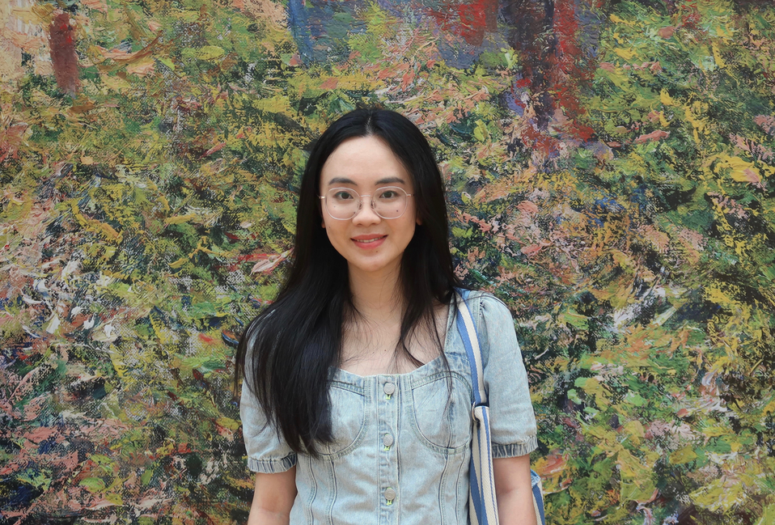

Xiaolu Liu (刘晓璐)
I am currently a fourth-year Ph.D. student at the College of Computer Science and Technology, Zhejiang University, advised by Prof. Jianke Zhu. Prior to this, I received my B.Eng. in Electronics and Computer Engineering from Zhejiang University through the ZJU-UIUC Joint Program (ZJUI). I am also a visiting Ph.D. student at the School of Computing (SoC), NUS, advised by Prof. Angela Yao.
My research interests lie in World Model, Autonomous Driving, and 3D Generation. Various forms of academic collaboration and discussion are welcome. Feel free to reach out!
Email / Google Scholar / GitHub / CV

News
- [2026.03] We released the preprint of DynFlowDrive, a dynamic latent world modeling framework for autonomous driving.
- [2026.01] Interp3D was accepted to ICLR 2026, which focuses on correspondence-aware interpolation for generative texture 3D morphing.
- [2025.06] UIGenMap was accepted to CVPR 2025, designed for Vectorized HD Map Construction.
Preprints & Publications


Internship
-
Focus on end-to-end autonomous driving and world models.
Education
-
Ph.D. @ Zhejiang University, 2022-2027 (expected)Advisor: Prof. Jianke Zhu
-
B.Eng. @ Zhejiang University, 2018-2022ZJU-UIUC Joint Program (ZJUI) | GPA: 3.87/4.0 | Rank: 6/51
Honors and Awards
- CSC National Scholarship for Overseas Study (2025)
- Outstanding Graduate Student, Zhejiang University (2023 - 2025)
- Five-Good Graduate Student, Zhejiang University (2023 - 2025)
- Outstanding Graduate, Zhejiang University (Top 5%) (2022)
- High Honor Graduate & Dean's List, UIUC (2019 - 2022)
- Second-Class Scholarship, Zhejiang University (2021)
Academic Services
- Journal Reviewer: T-ITS, T-CSVT, T-IV
- Conference Reviewer: ICML 2026, CVPR 2024/2025, ICCV 2025, IJCAI 2025, NeurIPS 2025, IROS 2025
- Teaching Assistant: FDS23/FDS25, ECE374, Math213